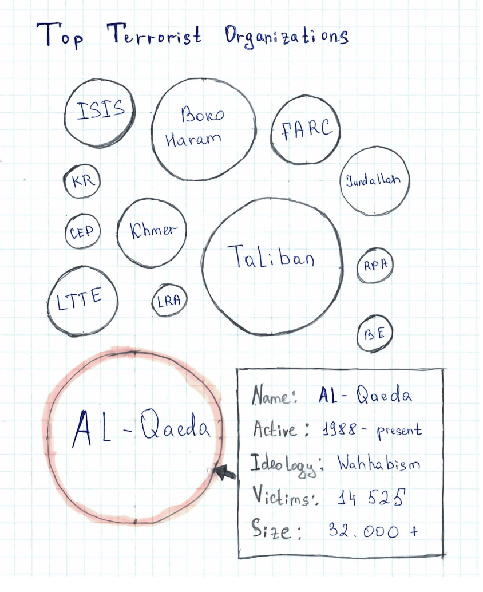
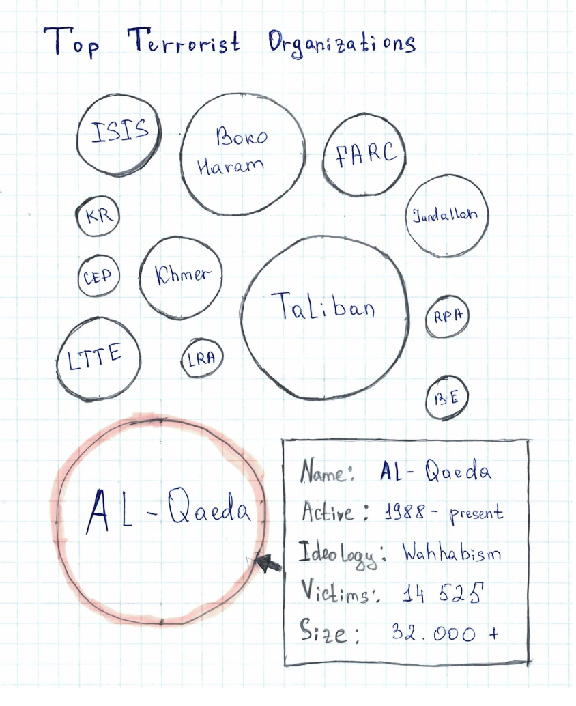

In the beginning of the project, we have chosen NBA datasets to work with. However, on Friday, March 15th, 2019, there was a devastating terror attack on two mosques in Christchurch, New Zealand, where 55 people were killed and 50 others were wounded. After being exposed to related videos and photos, we were very upset and devastated, and would like to work with global terrorism attack datasets to help provide a deeper insight into the different aspects of global terrorism in modern society, spanning from 1970 to 2017, especially since terrorism has unfortunately gained much more media attention as of late. As these events have been painfully recent, we believe that it is important to be aware of the circumstances surrounding terrorism and how it impacts the world on a global scale, while at the same time being careful to not promote biases and to remain rational in regards to these events.
Source: https://www.cnn.com/2019/03/15/asia/new-zealand-christchurch-attack-what-we-know-intl/index.html
We found the dataset we need on Kaggle. It contains information on more than 180.000 terrorist attacks that have occurred between 1970 and 2017. It’s an comprehensive dataset that contains more than 135 columns. We believe this dataset provides great flexibility in terms of visualizing time series, and geospatial dimensions of terrorist attacks.
We expect to do a decent amount of data cleanup to keep the columns we need, and aggregate necessary data to extract information we need. There is also formatting to consider, depending on the type of chart being used. Therefore, we plan to deal with data cleanup in Python and use pandas, matplotlib.
 Sketch #2: World Map with timeline, filter and legend
Sketch #2: World Map with timeline, filter and legend
 Sketch #3: Topographic map idea
Sketch #3: Topographic map idea
 Sketch #4: Additional Bubble Chart for “Top Terrorist Organizations”

Sketch #5: Possible map scaling based design
Sketch #4: Additional Bubble Chart for “Top Terrorist Organizations”

Sketch #5: Possible map scaling based design


Generally, we plan to split the programming 3 ways: Isabelle: Data wrangling Saulet: Design Zhikai: Implementation
However, there will most likely be overlapping coding responsibilities as one leads into the other, and since the implementation itself may be quite labor intensive. We also plan to split the additional non-programming work evenly.